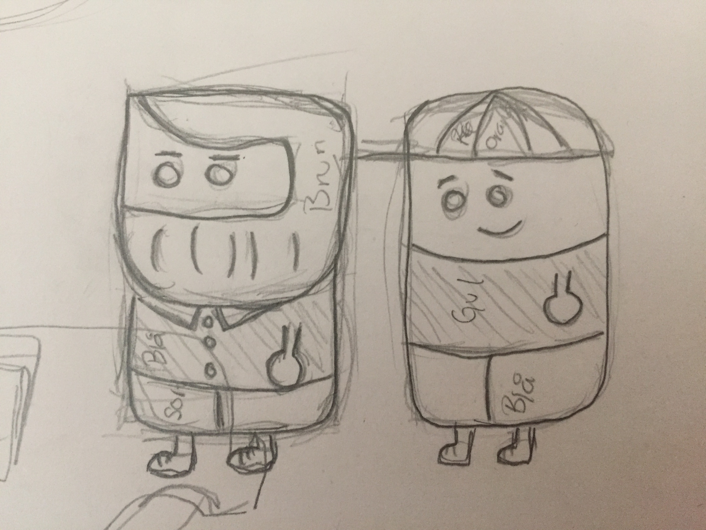
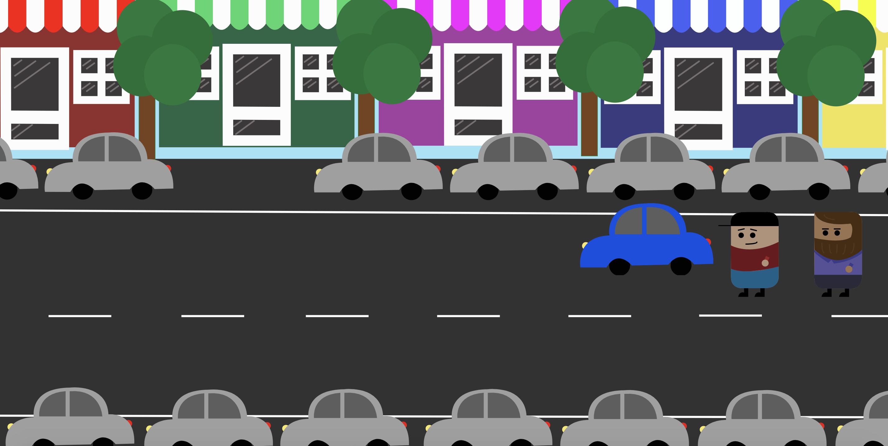

I forløbet "Grundlæggende animation", skulle vi programmere vores eget spil og/eller interaktive historie. Jeg valgte at tage udgangspunkt i en køretime, hvor eleven skulle lære at parallelparkere for første gang. Animationen hedder 'Køretimen'.
Animationen skulle laves i flatdesign, og til min animation lavede jeg skitser til to karakterer - En kørelærer og en elev:

Igennem alle mine tegninger, havde jeg den samme stil i tankerne, de samme farvekontraster, og en rød tråd ift hvordan flatdesign kom til sinde i mit spil / min interaktive historie. Baggrunden med figurerne kom til at se således ud:

Under hele processen skulle jeg lave nogle delopgaver. Jeg skulle lave et flowchart, som er et chart, der viser processen i spillet: Link til Flowchart og beskrivelse af idé og stil..
Derudover, skulle vi, i projektet, også dokumentere vores proces med vores animation. I linket kan du se alle de tegninger, jeg har med i animationen, et flowchart, beskrivelse af stil og idé og et sekvensdiagram over hvordan min javascript skulle opstilles: Link til procesdiagram.
Som noget af det sidste i projektet, skulle vi implementere lyd på vores animation. Lyden skulle vi selv indspille og min lyd kom til at lyde således:
Her et link til min animation: Link til Animation.
Værktøjer: Photoshop, InDesign, Illustrator, SVG, HTML, CSS, Javascript og jQuery.